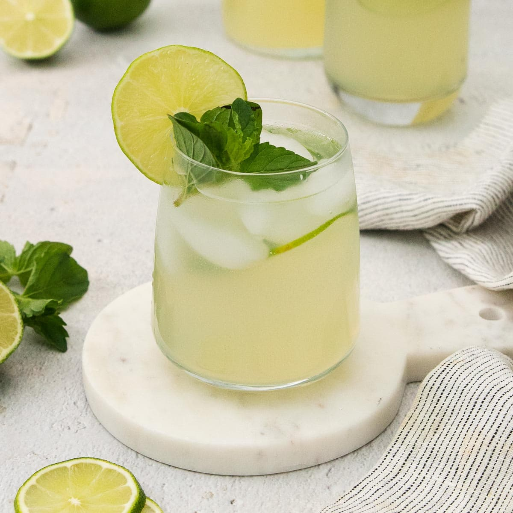

home
mint limeade

a refreshing beverage that is completely customizable to your taste preference! it also pairs well with an added bottle of semi-sweet white wine for a minty and citrusy sangria.
ingredients
- 4 cups water
- 1 1/2 cups sugar
- 1 cup fresh lime juice
- 1/3 cup mint leaves
- ice
- lime wedges and mint leaves for garnish
steps
- dissolve sugar in 2 cups of water, warmed, and add remaining 2 cups water
- in a blender, combine water, lime juice, and mint leaves
- blend until fully combined
- optionally, strain mint leaves or keep for a stronger flavor
- pour over ice and garnish with fresh lime wedges and mint leaves